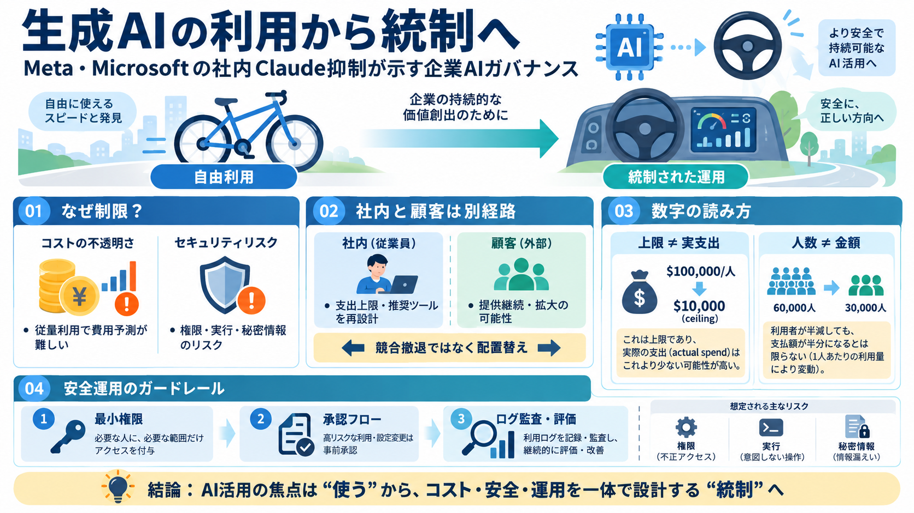

Meta, Microsoft Trim Claude Use as Users Drop to 30K
It’s worth remembering how recently Meta and Microsoft were both leaning into Anthropic rather than away from it. Earlie…

It’s worth remembering how recently Meta and Microsoft were both leaning into Anthropic rather than away from it. Earlie…
Microsoft reduced its projected internal spending on Claude by more than one-third down from an annualised peak projecti…
6:40 PM · Oct 5, 2026·72.3K Views 45 @wallstengine Wall St Engine Polymarket Money @wallstengine [...] 6:40…
Microsoft (MSFT) plans to end most internal Claude Code licenses by June 30, 2026, and cut spending on Anthropic's model…
The Information reports that Meta and Microsoft, two of Anthropic’s biggest corporate customers, are working to cut thei…